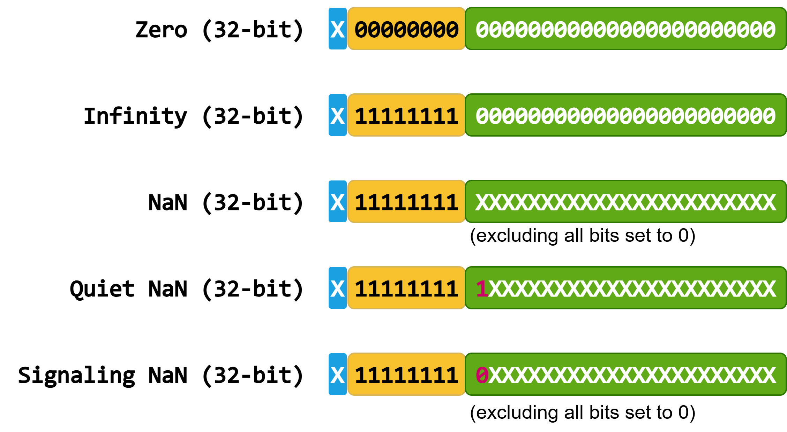

5.5.1. 부동소수점 소개#
1985년에 이진 부동소수점 산술을 위한 IEEE-754 표준이 채택된 이후, NVIDIA의 CUDA 아키텍처를 포함한 사실상 모든 주류 컴퓨팅 시스템이 이 표준을 구현해 왔습니다. IEEE-754 표준은 부동소수점 산술의 결과를 어떻게 근사해야 하는지를 규정합니다.
정확한 결과를 얻고 필요한 정밀도에서 최고 성능을 달성하려면 부동소수점 동작의 여러 측면을 고려하는 것이 중요합니다. 이는 특히 서로 다른 유형의 하드웨어에서 연산이 수행되는 이기종 컴퓨팅 환경에서 중요합니다.
다음 절에서는 부동소수점 연산의 기본 속성을 검토하고 Fused Multiply-Add(FMA) 연산과 내적(dot product)을 다룹니다. 이러한 예시는 서로 다른 구현 선택이 정확도에 어떻게 영향을 미치는지 보여줍니다.
5.5.1.1. 부동소수점 형식#
부동소수점 형식과 기능은 IEEE-754 표준에 정의되어 있습니다.
이 표준은 이진 부동소수점 데이터가 세 가지 필드로 인코딩되어야 함을 규정합니다:
부호: 양수 또는 음수를 나타내는 1비트.
지수: 수치적 바이어스로 오프셋된 밑 2 지수를 인코딩합니다.
가수(mantissa 또는 fraction이라고도 함): 수의 분수 값을 인코딩합니다.
{kind=link}
최신 IEEE-754 표준은 다음 이진 형식의 인코딩과 속성을 정의합니다:
16비트(반정밀도, half-precision)로, CUDA에서
__half데이터 타입에 해당합니다.32비트(단정밀도, single-precision)로, C, C++ 및 CUDA에서
float데이터 타입에 해당합니다.64비트(배정밀도, double-precision)로, C, C++ 및 CUDA에서
double데이터 타입에 해당합니다.128비트(사중정밀도, quad-precision)로, CUDA에서
__float128또는_Float128데이터 타입에 해당합니다.
이들 타입의 비트 길이는 다음과 같습니다:

normal 값에 대한 부동소수점 인코딩과 연관된 수치 값은 다음과 같이 계산됩니다:
subnormal 값의 경우, 공식은 다음과 같이 수정됩니다:
float에서는 7 + 127 = 134 = 10000110, double에서는 7 + 1023 = 1030 = 10000000110이라는 비트 문자열로 표현됩니다. 가수 0.5 = 2^-1는 첫 번째 비트 위치에 1이 있는 이진 값으로 표현됩니다. \(-192\)의 단정밀도 및 배정밀도 이진 인코딩은 다음 그림에 표시되어 있습니다.
분수 필드는 제한된 수의 비트를 사용하므로, 모든 실수를 정확하게 표현할 수는 없습니다. 예를 들어 분수의 수학적 값 \(2 / 3\)의 이진 표현은 0.10101010...이며, 이진 소수점 뒤에 무한히 많은 비트를 갖습니다. 따라서 \(2 / 3\)는 제한된 정밀도의 부동소수점 수로 표현되기 전에 반올림되어야 합니다. 반올림 규칙과 모드는 IEEE-754에 규정되어 있습니다. 가장 자주 사용되는 모드는 가장 가까운 값으로 반올림하고 동률이면 짝수로 반올림하는 방식(round-to-nearest-ties-to-even)이며, 보통 round-to-nearest로 줄여 부릅니다.
5.5.1.2. 정규값과 비정규값#
지수 필드가 모두 0도 아니고 모두 1도 아닌 부동소수점 값은 정규(normal)라고 합니다.
부동소수점 값의 중요한 측면 중 하나는 표현 가능한 가장 작은 양의 정규값(normal) 수인 FLT_MIN과 0 사이의 큰 간격입니다. 이 간격은 FLT_MIN과 두 번째로 작은 정규값 사이의 간격보다 훨씬 큽니다.
부동소수점 비정규(subnormal) 수( denormals라고도 함)는 이 문제를 해결하기 위해 도입되었습니다. 비정규 부동소수점 값은 지수의 모든 비트를 0으로 설정하고 가수(significand)에 최소 한 비트를 1로 설정하여 표현됩니다. 비정규값은 IEEE-754 부동소수점 표준의 필수 구성 요소입니다.
비정규값은 0을 향한 갑작스러운 반올림의 대안으로, 정밀도가 점진적으로 감소하도록 합니다. 그러나 비정규값은 계산 비용이 더 큽니다. 따라서 엄격한 정확도가 필요하지 않은 애플리케이션은 성능 향상을 위해 이를 피하도록 선택할 수 있습니다. nvcc 컴파일러는 -ftz=true 옵션(0으로 플러시, flush-to-zero)을 설정하여 비정규값을 비활성화할 수 있으며, 이는 --use_fast_math에도 포함되어 있습니다.
다음 그림은 단정밀도에서 가장 작은 정규값과 비정규값의 인코딩을 단순화하여 시각화한 것입니다.

여기서 X은 0과 1을 모두 나타냅니다.
5.5.1.3. 특수값#
IEEE-754 표준은 부동소수점 수에 대해 세 가지 특수값을 정의합니다:
0:
수학적 0.
부동소수점 0에는
+0및-0의 두 가지 가능한 표현이 있다는 점에 유의하십시오. 이는 정수 0의 표현과 다릅니다.+0 == -0는true로 평가됩니다.0은 지수와 가수에서 모든 비트를
0로 설정하여 인코딩됩니다.
무한대:
부동소수점 수는 포화 산술(saturation arithmetic)에 따라 동작하며, 표현 가능한 범위를 오버플로하는 연산은
+Infinity또는-Infinity를 결과로 합니다.무한대는 지수의 모든 비트를
1로, 가수의 모든 비트를0로 설정하여 인코딩됩니다. 무한대 값에 대한 인코딩은 정확히 두 가지가 있습니다.무한대와 유한한 0이 아닌 값을 포함하는 산술 연산은 일반적으로 무한대를 결과로 합니다.
Inf * 0.0,Inf - Inf,Inf / Inf, 그리고0.0 / 0.0와 같은 부정형은 NaN을 결과로 합니다.
숫자가 아님(Not-a-Number, NaN):
NaN은 정의되지 않았거나 표현할 수 없는 값을 나타내는 특수 기호입니다. 일반적인 예로는
0.0 / 0.0,sqrt(-1.0), 또는+Inf - Inf가 있습니다.NaN은 지수의 모든 비트를
1로 설정하고, 가수에서는 모든 비트를 0으로 설정한 경우를 제외한 임의의 비트 패턴으로 인코딩됩니다. 가능한 인코딩은 \(2^{\mathrm{mantissa} + 1} - 2\)가지입니다.NaN을 포함하는 어떤 산술 연산도 NaN을 결과로 합니다.
NaN을 포함하는 어떤 순서 비교(
<,<=,>,>=,==)도false를 결과로 하며, 여기에는NaN == NaN(비반사적)도 포함됩니다. 비순서 비교인NaN != NaN는true를 반환합니다.NaN은 두 가지 형태로 제공됩니다:
조용한 NaN
qNaN는 유효하지 않은 연산이나 값에서 비롯되는 오류를 전파하는 데 사용됩니다. 유효하지 않은 산술 연산은 일반적으로 조용한 NaN을 생성합니다. 이는 가수의 최상위 비트를 로 설정하여 인코딩됩니다.1.시그널링 NaN
sNaN는 잘못된 연산(invalid-operation) 예외를 발생시키도록 설계되었습니다. 시그널링 NaN은 일반적으로 명시적으로 생성됩니다. 이는 가수의 최상위 비트를 다음으로 설정하여 인코딩됩니다.0.조용한 NaN과 시그널링 NaN의 정확한 비트 패턴은 구현에 따라 정의됩니다. CUDA는 이러한 특수 값을 얻기 위해 cuda::std::numeric_limits<T>::quiet_NaN 및 cuda::std::numeric_limits<T>::signaling_NaN 상수를 제공합니다.
특수 값 인코딩을 단순화하여 시각화한 내용은 다음 그림에 나와 있습니다:
{kind=link}

여기서 X는 0와 1를 모두 나타냅니다.
5.5.1.4. 결합법칙#
제한된 정밀도로 인해 수학적 산술의 규칙과 성질이 부동소수점 산술에는 직접 적용되지 않는다는 점에 유의하는 것이 중요합니다. 아래 예는 단정밀도 값 A, B, C 및 서로 다른 결합 방식으로 계산한 합의 정확한 수학적 값을 보여줍니다.
수학적으로 \((A + B) + C\)는 \(A + (B + C)\)와 같습니다.
\(\mathrm{rn}(x)\)를 \(x\)에 대한 한 번의 반올림 단계로 나타내겠습니다. IEEE-754에 따라 최근접 반올림 모드(round-to-nearest)에서 단정밀도 부동소수점 산술로 동일한 계산을 수행하면 다음을 얻습니다.
참고로, 정확한 수학적 결과도 위에서 계산했습니다. IEEE-754에 따라 계산된 결과는 정확한 수학적 결과와 다릅니다. 또한 합 \(\mathrm{rn}(\mathrm{rn}(A + B) + C)\) 및 \(\mathrm{rn}(A + \mathrm{rn}(B + C))\)에 해당하는 결과는 서로 다릅니다. 이 경우 \(\mathrm{rn}(A + \mathrm{rn}(B + C))\)가 \(\mathrm{rn}(\mathrm{rn}(A + B) + C)\)보다 올바른 수학적 결과에 더 가깝습니다.
이 예시는 모든 기본 연산이 IEEE-754를 준수하더라도, 겉보기에는 동일한 계산이 서로 다른 결과를 낼 수 있음을 보여줍니다.
5.5.1.5. Fused Multiply-Add (FMA)#
Fused Multiply-Add(FMA) 연산은 단 한 번의 반올림 단계만으로 결과를 계산합니다. FMA가 없다면 결과에는 두 번의 반올림 단계가 필요합니다. 하나는 곱셈에, 다른 하나는 덧셈에 해당합니다. FMA는 반올림 단계를 한 번만 사용하므로 더 정확한 결과를 생성합니다.
Fused Multiply-Add 연산은 두 개의 개별 연산과는 다르게 NaN의 전파에 영향을 줄 수 있습니다. 그러나 FMA NaN 처리는 모든 타깃에서 보편적으로 동일하지는 않습니다. 여러 NaN 피연산자가 있는 서로 다른 구현에서는 조용한 NaN을 선호하거나 한 피연산자의 페이로드를 전파할 수 있습니다. 또한 IEEE-754는 여러 NaN 피연산자가 존재할 때 결정적인 페이로드 선택 순서를 엄격히 의무화하지 않습니다. NaN은 중간 계산에서도 발생할 수 있는데, 예를 들어 \(\infty \times 0 + 1\) 또는 \(1 \times \infty - \infty\)처럼 구현에 따라 정의되는 NaN 페이로드가 결과로 나타납니다.
명확성을 위해, 먼저 FMA 연산이 어떻게 동작하는지 설명하기 위해 10진 산술을 사용하는 예를 고려하겠습니다. 소수점 이하 4자리를 포함해 총 5자리 정밀도를 사용하여 \(x^2 - 1\)을 계산하겠습니다.
\(x = 1.0008\)에 대해, 올바른 수학적 결과는 \(x^2 - 1 = 1.60064 \times 10^{-4}\)입니다. 소수점 이하 4자리만 사용했을 때 가장 가까운 수는 \(1.6006 \times 10^{-4}\)입니다.
Fused Multiply-Add 연산은 단 한 번의 반올림 단계 \(\mathrm{rn}(x \times x - 1) = 1.6006 \times 10^{-4}\)만으로 올바른 결과를 얻습니다.
대안은 곱셈과 덧셈 단계를 별도로 계산하는 것입니다. \(x^2 = 1.00160064\)는 \(\mathrm{rn}(x \times x) = 1.0016\)으로 반올림됩니다. 최종 결과는 \(\mathrm{rn}(\mathrm{rn}(x \times x) -1) = 1.6000 \times 10^{-4}\)입니다.
곱셈과 덧셈을 별도로 반올림하면 결과가 \(0.00064\)만큼 벗어납니다. 이에 해당하는 FMA 계산은 단지 \(0.00004\)만큼만 틀리며, 그 결과는 올바른 수학적 답에 가장 가깝습니다. 결과는 아래에 요약되어 있습니다:
아래는 이진 단정밀도 값을 사용한 또 다른 예시입니다:
곱셈과 덧셈을 별도로 계산하면 정밀도의 모든 비트가 손실되어 \(0\)이 됩니다.
반면 FMA를 계산하면 수학적 값과 동일한 결과를 제공합니다.
Fused Multiply-Add(FMA)는 감산 소거(subtractive cancellation) 중 정밀도 손실을 방지하는 데 도움이 됩니다. 감산 소거는 부호가 반대이면서 크기가 유사한 값들을 더할 때 발생합니다. 이 경우 선행 비트의 상당수가 상쇄되어 유효 비트 수가 줄어듭니다. Fused Multiply-Add는 곱셈 중 두 배 폭(double-width)의 곱을 계산합니다. 따라서 덧셈 중 감산 소거가 발생하더라도, 정확한 결과를 산출하기에 충분한 유효 비트가 곱에 남아 있습니다.
CUDA에서의 Fused Multiply-Add 지원:
CUDA는 float 및 double 데이터 타입 모두에 대해 여러 방식으로 Fused Multiply-Add 연산을 제공합니다:
x * y + z(플래그-fmad=true또는--use_fast_math로 컴파일할 때).fma(x, y, z)및fmaf(x, y, z)C 표준 라이브러리 함수.__fmaf_[rd, rn, ru, rz],__fmaf_ieee_[rd, rn, ru, rz], 및__fma_[rd, rn, ru, rz]CUDA 수학 내장(intrinsic) 함수.cuda::std::fma(x, y, z)및cuda::std::fmaf(x, y, z)CUDA C++ 표준 라이브러리 함수.
호스트 플랫폼에서의 Fused Multiply-Add 지원:
융합(fused) 연산 사용 여부는 플랫폼에서 해당 연산을 사용할 수 있는지와 코드가 어떻게 컴파일되는지에 따라 달라집니다. CPU와 GPU 결과를 비교할 때는 호스트 플랫폼의 Fused Multiply-Add 지원을 이해하는 것이 중요합니다.
컴파일러 플래그 및 Fused Multiply-Add 하드웨어 지원:
-mfmaGCC 및 Clang에서,-MfmaNVC++에서, 그리고/fp:contractMicrosoft Visual Studio에서.AVX2 ISA를 사용하는 x86 플랫폼(예: GCC 또는 Clang에서
-mavx2플래그로 컴파일한 코드, 그리고 Microsoft Visual Studio에서/arch:AVX2).Advanced SIMD(Neon) ISA를 사용하는 Arm64(AArch64) 플랫폼.
fma(x, y, z)및fmaf(x, y, z)C 표준 라이브러리 함수.std::fma(x, y, z)및std::fmaf(x, y, z)C++ 표준 라이브러리 함수.cuda::std::fma(x, y, z)및cuda::std::fmaf(x, y, z)CUDA C++ 표준 라이브러리 함수.
5.5.1.6. 내적 예제#
원소가 네 개인 두 개의 짧은 벡터 \(\overrightarrow{a}\)와 \(\overrightarrow{b}\)의 내적을 구하는 문제를 고려해 보겠습니다.
이 연산은 수학적으로는 쉽게 적을 수 있지만, 소프트웨어에서 이를 구현할 때는 결과가 약간씩 달라질 수 있는 여러 대안이 있습니다. 여기서 제시하는 모든 전략은 IEEE-754를 완전히 준수하는 연산을 사용합니다.
예제 알고리즘 1: 내적을 계산하는 가장 간단한 방법은 곱의 순차 합을 사용하는 것으로, 곱셈과 덧셈을 분리해서 유지합니다.
최종 결과는 \(((((a_1 \times b_1) + (a_2 \times b_2)) + (a_3 \times b_3)) + (a_4 \times b_4))\)로 표현할 수 있습니다.
예제 알고리즘 2: Fused Multiply-Add(FMA)를 사용하여 내적을 순차적으로 계산합니다.
최종 결과는 \((a_4 \times b_4) + ((a_3 \times b_3) + ((a_2 \times b_2) + (a_1 \times b_1 + 0)))\)로 표현할 수 있습니다.
예제 알고리즘 3: 분할 정복 전략을 사용하여 내적을 계산합니다. 먼저 벡터의 앞 절반과 뒤 절반의 내적을 구합니다. 그런 다음 덧셈을 사용해 이 결과들을 결합합니다. 이 알고리즘은 두 하위 문제가 서로 독립적이어서 병렬로 계산할 수 있으므로 “병렬 알고리즘”이라고 합니다. 그러나 이 알고리즘은 병렬 구현을 요구하지 않으며, 단일 스레드로도 구현할 수 있습니다.
최종 결과는 \(((a_1 \times b_1) + (a_2 \times b_2)) + ((a_3 \times b_3) + (a_4 \times b_4))\)로 표현할 수 있습니다.
5.5.1.7. 반올림#
IEEE-754 표준은 여러 연산에 대한 지원을 요구합니다. 여기에는 덧셈, 뺄셈, 곱셈, 나눗셈, 제곱근, Fused Multiply-Add(FMA), 나머지 계산, 변환, 스케일링, 부호, 그리고 비교 연산과 같은 산술 연산이 포함됩니다. 이러한 연산의 결과는 주어진 형식과 반올림 모드에 대해 표준의 모든 구현에서 일관되도록 보장됩니다.
반올림 모드
IEEE-754 표준은 네 가지 반올림 모드를 정의합니다: round-to-nearest, 양의 방향으로 반올림, 음의 방향으로 반올림, 그리고 0을 향해 반올림. CUDA는 네 가지 모드 모두를 지원합니다. 기본적으로 연산은 최근접 반올림(round-to-nearest)을 사용합니다. 내장 수학 함수를 사용하면 개별 연산에 대해 다른 반올림 모드를 선택할 수 있습니다.
반올림 모드 |
해석 |
|---|---|
|
가장 가까운 값으로 반올림, 동률이면 짝수로 |
|
0을 향해 반올림 |
|
\(\infty\)를 향해 반올림 |
|
\(-\infty\)를 향해 반올림 |
5.5.1.8. 호스트/디바이스 계산 정확도에 대한 참고 사항#
부동소수점 연산 결과의 정확도는 여러 요인의 영향을 받습니다. 이 섹션에서는 부동소수점 연산에서 신뢰할 수 있는 결과를 얻기 위한 중요한 고려 사항을 요약합니다. 이러한 측면 중 일부는 앞선 섹션에서 더 자세히 설명했습니다.
이러한 측면은 CPU와 GPU 간 결과를 비교할 때도 중요합니다. 호스트와 디바이스 실행 간 차이는 신중하게 해석해야 합니다. 차이가 존재한다고 해서 반드시 GPU의 결과가 잘못되었거나 GPU에 문제가 있다는 의미는 아닙니다.
결합법칙:
유한 정밀도에서의 부동소수점 덧셈과 곱셈은 종종 목표 형식에서 직접 표현할 수 없는 수학적 값을 만들어 반올림이 필요하므로 결합적(associative)이지 않습니다. 이러한 연산을 평가하는 순서는 반올림 오차가 누적되는 방식에 영향을 미치며 최종 결과를 크게 바꿀 수 있습니다.
Fused Multiply-Add:
Fused Multiply-Add는 \(a \times b + c\)를 단일 연산으로 계산하여 더 높은 정확도와 더 빠른 실행 시간을 제공합니다. 최종 결과의 정확도는 이를 사용함에 따라 영향을 받을 수 있습니다. Fused Multiply-Add는 하드웨어 지원에 의존하며, 관련 함수를 명시적으로 호출하거나 컴파일러 최적화 플래그를 통해 암시적으로 활성화할 수 있습니다.
정밀도:
부동소수점 정밀도를 높이면 결과의 정확도를 잠재적으로 개선할 수 있습니다. 더 높은 정밀도는 유효숫자 손실을 줄이고 더 넓은 범위의 값을 표현할 수 있게 합니다. 그러나 더 높은 정밀도 타입은 처리량이 낮고 더 많은 레지스터를 사용합니다. 또한 이를 사용해 입력과 출력을 명시적으로 저장하면 메모리 사용량과 데이터 이동이 증가합니다.
컴파일러 플래그 및 최적화:
모든 주요 컴파일러는 부동소수점 연산의 동작을 제어하기 위한 다양한 최적화 플래그를 제공합니다.
GCC (
-O3), Clang (-O3), nvcc (-O3), Microsoft Visual Studio (/O2)의 최고 최적화 수준은 부동소수점 의미론에 영향을 주지 않습니다. 그러나 인라인화, 루프 언롤링, 벡터화, 공통 부분식 제거는 결과에 영향을 줄 수 있습니다. NVC++ 컴파일러는 IEEE-754 준수 의미론을 위해 플래그-Kieee -Mnofma도 필요합니다.부동소수점 동작에 영향을 미치는 옵션에 대한 자세한 정보는 GCC, Clang, Microsoft Visual Studio Compiler, nvc++, Arm C/C++ compiler 문서를 참조하십시오.
CUDA 디바이스 코드에서 부동소수점 동작에 특히 영향을 미치는 컴파일러 플래그에 대한 자세한 설명은
nvcc사용자 매뉴얼도 참조하십시오:-ftz,-prec-div,-prec-sqrt,-fmad,--use_fast_math. 이러한 부동소수점 옵션 외에도 사용자 프로그램의 맥락에서 다른 컴파일러 최적화의 영향을 확인하는 것 또한 중요합니다. 사용자는 광범위한 테스트로 결과의 정확성을 검증하고, 최적화를 활성화했을 때와 모든 디바이스 코드 최적화를 비활성화했을 때 얻은 결과를 비교할 것이 권장됩니다.-G컴파일러 플래그도 참조하십시오.
라이브러리 구현:
IEEE-754 표준 밖에서 정의된 함수는 올바른 반올림이 보장되지 않으며 구현에 따라 정의되는 동작에 의존합니다. 따라서 호스트, 디바이스, 그리고 서로 다른 디바이스 아키텍처 간을 포함하여 플랫폼에 따라 결과가 달라질 수 있습니다.
결정적 결과:
결정적 결과란 동일한 지정 조건에서 동일한 입력으로 실행할 때마다 비트 단위로 동일한 수치 출력이 계산되는 것을 의미합니다. 이러한 조건에는 다음이 포함됩니다:
동일한 CPU 프로세서 또는 GPU 디바이스에서의 실행과 같은 하드웨어 의존성.
컴파일러 버전과 컴파일러 플래그 및 최적화와 같은 컴파일러 측면.
반올림 모드 또는 환경 변수와 같이 계산에 영향을 미치는 런타임 조건.
계산에 대한 동일한 입력.
계산에 관여하는 스레드 수와 그 조직(예: 블록 및 그리드 크기)을 포함한 스레드 구성.
산술 원자 연산의 순서는 실행마다 달라질 수 있는 하드웨어 스케줄링에 의존합니다.
CUDA 라이브러리 활용:
CUDA Math Libraries, C 표준 라이브러리 수학 함수, 그리고 C++ 표준 라이브러리 수학 함수는 일반적인 기능, 특히 부동소수점 수학과 수치 연산 집약 루틴에 대해 개발자 생산성을 높이도록 설계되었습니다. 이러한 기능은 일관된 고수준 인터페이스를 제공하고, 최적화되어 있으며, 다양한 플랫폼과 엣지 케이스에서 폭넓게 테스트되어 있습니다. 사용자는 이러한 라이브러리를 최대한 활용하고 번거로운 수동 재구현을 피하는 것이 권장됩니다.
5.5.2. 부동소수점 데이터 타입#
CUDA는 Bfloat16, half-, single-, double-, quad-정밀도 부동소수점 데이터 타입을 지원합니다. 다음 표는 CUDA에서 지원되는 부동소수점 데이터 타입과 그 요구 사항을 요약합니다.
정밀도 / 이름 |
데이터 타입 |
IEEE-754 |
헤더 / 빌트인 |
요구 사항 |
|---|---|---|---|---|
Bfloat16 |
|
❌ |
|
Compute Capability 8.0 이상. |
Half Precision |
|
✅ |
|
|
Single Precision |
|
✅ |
Built-in |
|
Double Precision |
|
✅ |
Built-in |
|
Quad Precision |
|
✅ |
Built-in 수학 함수를 위한 |
호스트 컴파일러 지원 및 Compute Capability 10.0 이상. C 또는 C++ 표기인 |
CUDA는 또한 TensorFloat-32 (TF32), 마이크로스케일링(MX) 부동소수점 타입, 그리고 일반 목적 계산용이 아니라 텐서 코어를 포함한 특수 목적을 위한 더 낮은 정밀도의 수치 형식도 지원합니다. 여기에는 4비트, 6비트, 8비트 부동소수점 타입이 포함됩니다. 자세한 내용은 CUDA Math API를 참조하십시오.
다음 그림은 지원되는 부동소수점 데이터 타입의 가수와 지수 크기를 보여줍니다.

다음 표는 지원되는 부동소수점 데이터 타입의 범위를 보여줍니다.
정밀도 / 이름 |
최대 값 |
가장 작은 양의 값 |
가장 작은 양의 비정규값 |
엡실론 |
||
|---|---|---|---|---|---|---|
Bfloat16 |
\(\approx 2^{128}\) |
\(\approx 3.39 \cdot 10^{38}\) |
\(2^{-126}\) |
\(\approx 1.18 \cdot 10^{-38}\) |
\(2^{-133}\) |
\(2^{-7}\) |
Half Precision |
\(\approx 2^{16}\) |
\(65504\) |
\(2^{-14}\) |
\(\approx 6.1 \cdot 10^{-5}\) |
\(2^{-24}\) |
\(2^{-10}\) |
Single Precision |
\(\approx 2^{128}\) |
\(\approx 3.40 \cdot 10^{38}\) |
\(2^{-126}\) |
\(\approx 1.18 \cdot 10^{-38}\) |
\(2^{-149}\) |
\(2^{-23}\) |
Double Precision |
\(\approx 2^{1024}\) |
\(\approx 1.8 \cdot 10^{308}\) |
\(2^{-1022}\) |
\(\approx 2.22 \cdot 10^{-308}\) |
\(2^{-1074}\) |
\(2^{-52}\) |
Quad Precision |
\(\approx 2^{16384}\) |
\(\approx 1.19 \cdot 10^{4932}\) |
\(2^{-16382}\) |
\(\approx 3.36 \cdot 10^{-4932}\) |
\(2^{-16494}\) |
\(2^{-112}\) |
힌트
그 CUDA C++ 표준 라이브러리 제공합니다 cuda::std::numeric_limits 에서 <cuda/std/limits> 지원되는 부동소수점 타입의 속성과 범위를 질의하기 위한 헤더를 제공하며, 여기에는 마이크로스케일링 형식(MX). 다음을 참조하십시오 C++ 참조 쿼리 가능한 속성 목록은
복소수 지원:
그 CUDA C++ 표준 라이브러리 다음과 함께 복소수를 지원합니다 cuda::std::complex 타입에서
<cuda/std/complex>헤더. 또한 다음을 참조하십시오 libcu++ 문서 자세한 내용은 이를 참조하십시오.CUDA는 또한 다음을 통해 복소수에 대한 기본 지원도 제공합니다.
cuComplex그리고cuDoubleComplex다음의 타입을cuComplex.h헤더에서.
5.5.3. CUDA 및 IEEE-754 준수#
모든 GPU 디바이스는 다음 제한 사항과 함께 이진 부동소수점 산술에 대해 IEEE 754-2019 표준을 따릅니다:
동적으로 구성 가능한 반올림 모드는 없습니다. 그러나 대부분의 연산은 여러 고정 IEEE 반올림 모드를 지원하며, 특별히 명명된 디바이스 내장(intrinsics) 함수를 통해 선택할 수 있습니다.
부동소수점 예외를 감지하는 메커니즘이 없으므로, 모든 연산은 IEEE-754 예외가 항상 마스킹된 것처럼 동작합니다. 예외적 이벤트가 발생하면 IEEE-754에서 정의된 기본 마스킹 응답이 제공됩니다. 이러한 이유로, signaling NaN
SNaN인코딩이 지원되지만 signaling되지 않으며 조용한 예외로 처리됩니다.부동소수점 연산은 입력 NaN payload의 비트 패턴을 변경할 수 있습니다. 절댓값 및 부호 반전과 같은 연산 또한 IEEE 754 요구 사항을 준수하지 않을 수 있으며, 그 결과 NaN의 부호가 구현 정의 방식으로 업데이트될 수 있습니다.
결과의 이식성을 최대화하기 위해, 사용자는 nvcc 컴파일러의 부동소수점 옵션 기본 설정인 -ftz=false, -prec-div=true, 그리고 -prec-sqrt=true를 사용할 것을 권장하며, --use_fast_math 옵션은 사용하지 않는 것이 좋습니다. 부동소수점 표현식의 재결합 및 수축(contraction)은 기본적으로 허용되며, 이는 --fmad=true 옵션과 유사합니다. 이러한 컴파일 플래그에 대한 자세한 설명은 nvcc 사용자 매뉴얼도 참조하십시오.
IEEE-754 및 C/C++ 언어 표준은 반올림된 정수 값이 대상 정수 형식의 범위를 벗어나는 경우에 부동소수점 값을 정수 값으로 변환하는 동작을 명시적으로 다루지 않습니다. GPU 디바이스의 범위로 클램핑하는 동작은 PTX ISA 변환 명령 섹션에 설명되어 있습니다. 그러나 컴파일러 최적화는, 범위 밖 변환이 PTX 명령을 통해 직접 호출되지 않는 경우 미정의 동작 조항을 활용할 수 있으며, 그 결과 정의되지 않은 동작과 유효하지 않은 CUDA 프로그램으로 이어질 수 있습니다. CUDA Math 문서는 함수/내장(intrinsic)별로 사용자에게 경고를 제공합니다. 예를 들어, __double2int_rz() 명령을 고려해 보십시오. 이는 호스트 컴파일러 및 라이브러리 구현의 동작 방식과 다를 수 있습니다.
원자 함수 비정규값 동작:
원자 연산은 컴파일러 플래그 -ftz 설정과 관계없이 부동소수점 비정규값에 대해 다음과 같은 동작을 합니다:
전역 메모리에서의 원자 단정밀도 부동소수점 덧셈은 항상 flush-to-zero 모드로 동작하며, 즉 PTX
add.rn.ftz.f32시맨틱과 동등하게 동작합니다.공유 메모리에서의 원자 단정밀도 부동소수점 덧셈은 항상 비정규값 지원으로 동작하며, 즉 PTX
add.rn.f32시맨틱과 동등하게 동작합니다.
5.5.4. CUDA 및 C/C++ 준수#
부동소수점 예외:
호스트 구현과 달리, 디바이스 코드에서 지원되는 수학 연산자 및 함수는 전역 errno 변수를 설정하지 않으며, 오류를 나타내기 위해 부동소수점 예외를 보고하지도 않습니다. 따라서 오류 진단 메커니즘이 필요하다면, 사용자는 해당 함수에 대해 추가적인 입력 및 출력 검사(screening)를 구현해야 합니다.
부동소수점 연산에서의 미정의 동작:
수학 연산에서 미정의 동작의 일반적인 조건은 다음을 포함합니다:
수학 연산자 및 함수에 대한 잘못된 인자:
초기화되지 않은 부동소수점 변수를 사용하는 경우.
수명이 끝난 부동소수점 변수를 사용하는 경우.
부호 있는 정수 오버플로.
유효하지 않은 포인터를 역참조하는 경우.
부동소수점에 특화된 미정의 동작:
표현할 수 없는 결과가 되는 정수 타입으로 부동소수점 값을 변환하는 것은 미정의 동작입니다. 여기에는 NaN과 무한대도 포함됩니다.
사용자는 CUDA 프로그램의 유효성을 보장할 책임이 있습니다. 잘못된 인자는 미정의 동작을 초래할 수 있으며 컴파일러 최적화의 대상이 될 수 있습니다.
정수의 0으로 나누기와 달리, 부동소수점의 0으로 나누기는 미정의 동작이 아니며 컴파일러 최적화의 대상도 아닙니다. 대신 이는 구현 종속 동작입니다. CUDA를 포함해 IEC-60559(IEEE-754)를 준수하는 C++ 구현은 무한대를 생성합니다. 유효하지 않은 부동소수점 연산은 NaN을 생성하며, 이를 미정의 동작으로 오해해서는 안 됩니다. 예로는 0을 0으로 나누는 경우와 무한대를 무한대로 나누는 경우가 있습니다.
부동소수점 리터럴 이식성:
C와 C++ 모두 부동소수점 값을 10진수 또는 16진수 표기로 표현할 수 있습니다. C99 및 C++17에서 지원되는 16진수 부동소수점 리터럴은, 2진수 기반에서 정확히 표현될 수 있는 과학적 표기법으로 실수 값을 나타냅니다. 그러나 이는 리터럴이 대상 변수에 저장되는 실제 값으로 매핑됨을 보장하지는 않습니다(다음 문단 참조). 반대로, 10진수 부동소수점 리터럴은 2진수 기반으로 표현할 수 없는 수치 값을 나타낼 수 있습니다.
C++ 표준 규칙에 따르면, 16진수 및 10진수 부동소수점 리터럴은 표현 가능한 가장 가까운 값으로 반올림되며, 더 크거나 더 작은 값의 선택은 구현 정의 방식으로 결정됩니다. 이러한 반올림 동작은 호스트와 디바이스 간에 다를 수 있습니다.
float f1 = 0.5f; // 0.5, '0.5f' is a decimal floating-point literal
float f2 = 0x1p-1f; // 0.5, '0x1p-1f' is a hexadecimal floating-point literal
float f3 = 0.1f;
// f1, f2 are represented as 0 01111110 00000000000000000000000
// f3 is represented as 0 01111011 10011001100110011001101
동일한 부동소수점 표현식에 대한 런타임 및 컴파일타임 평가는 다음과 같은 이식성 문제의 영향을 받습니다:
부동소수점 표현식의 런타임 평가는 선택된 반올림 모드, 부동소수점 컨트랙션(FMA) 및 재결합(reassociation) 컴파일러 설정, 그리고 부동소수점 예외의 영향을 받을 수 있습니다. CUDA는 부동소수점 예외를 지원하지 않으며 반올림 모드는 기본적으로 가장 가까운 값으로 반올림하고 동률이면 짝수로 반올림하는 방식(round-to-nearest-ties-to-even)으로 설정됩니다. 다른 반올림 모드는 내장 함수를 사용하여 선택할 수 있습니다.
컴파일러는 상수 표현식에 대해 더 높은 정밀도의 내부 표현을 사용할 수 있습니다.
컴파일러는 상수 폴딩(constant folding), 상수 전파(constant propagation), 공통 부분식 제거(common subexpression elimination)와 같은 최적화를 수행할 수 있으며, 이로 인해 최종 값 또는 비교 결과가 달라질 수 있습니다.
C 표준 수학 라이브러리 참고 사항:
일반적인 수학 함수의 호스트 구현은 플랫폼별 방식으로 C 표준 수학 라이브러리 함수에 매핑됩니다. 이러한 함수는 호스트 컴파일러 및 해당 호스트 libm에서(가능한 경우) 제공합니다.
호스트 컴파일러에서 사용할 수 없는 함수는
crt/math_functions.h헤더 파일에 구현됩니다. 예를 들어,erfinv()는 그곳에 구현되어 있습니다.rhypot()및cyl_bessel_i0()와 같은 덜 일반적인 함수는 디바이스 코드에서만 사용할 수 있습니다.
앞서 언급했듯이, 수학 함수의 호스트 및 디바이스 구현은 서로 독립적입니다. 이러한 함수의 동작에 대한 자세한 내용은 호스트 구현의 문서를 참조하십시오.
5.5.5. 부동소수점 기능 노출#
CUDA가 지원하는 수학 함수는 다음 방법을 통해 노출됩니다:
x + y,x - y,x * y,x / y,x++,x--,x += y,x -= y,x *= y,x /= y.각각
float,double, 및__float128/_Float128인 단정밀도, 배정밀도, 그리고 쿼드 정밀도 타입을 지원합니다.__half및__nv_bfloat16타입도 각각<cuda_fp16.h>및<cuda_bf16.h>헤더를 포함하여 지원됩니다.__float128/_Float128타입 지원은 호스트 컴파일러 및 디바이스 컴퓨트 기능에 의존하며, 지원되는 부동소수점 타입 표를 참조하십시오.
이는 호스트 및 디바이스 코드 모두에서 사용할 수 있습니다.
이들의 동작은
nvcc최적화 플래그의 영향을 받습니다.
<cmath>의 C++ 전체 세트 헤더 함수를<cuda/std/cmath>헤더와cuda::std::네임스페이스를 통해 노출합니다.IEEE-754 표준 부동소수점 타입인
__half,float,double,__float128는 물론, Bfloat16__nv_bfloat16도 지원합니다.__float128지원은 호스트 컴파일러와 디바이스 컴퓨트 기능에 의존하므로 지원되는 부동소수점 타입 표를 참조하십시오.
이는 호스트 코드와 디바이스 코드 모두에서 사용할 수 있습니다.
이들은 종종 CUDA Math API 함수에 의존합니다. 따라서 호스트 코드와 디바이스 코드 간에 정확도 수준이 다를 수 있습니다.
이들의 동작은
nvcc최적화 플래그의 영향을 받습니다.C++23 및 C++26 표준 사양에 따라,
constexpr함수와 같은 일부 기능은 상수 표현식에서도 지원됩니다.
CUDA C 표준 라이브러리 수학 함수 (CUDA Math API):
C
<math.h>헤더 함수의 하위 집합을 노출합니다.각각
float및double인 단정밀도 및 배정밀도 타입을 지원합니다.호스트 및 디바이스 코드 모두에서 사용할 수 있습니다.
추가 헤더가 필요하지 않습니다.
동작은
nvcc최적화 플래그의 영향을 받습니다.
<math.h>헤더 기능의 하위 집합도__half,__nv_bfloat16, 및__float128/_Float128타입에 대해 사용할 수 있습니다. 이러한 함수는 C 표준 라이브러리의 함수 이름과 유사한 이름을 갖습니다.__half및__nv_bfloat16타입은 각각<cuda_fp16.h>및<cuda_bf16.h>헤더가 필요합니다. 호스트 및 디바이스 코드에서의 사용 가능 여부는 함수별로 정의됩니다.__float128/_Float128타입 지원은 호스트 컴파일러와 디바이스 컴퓨트 기능(compute capability)에 따라 달라지며, 지원되는 부동소수점 타입 표를 참조하십시오. 관련 함수에는crt/device_fp128_functions.h헤더가 필요하며 디바이스 코드에서만 사용할 수 있습니다.
호스트와 디바이스 코드 간 정확도가 다를 수 있습니다.
비표준 CUDA 수학 함수 (CUDA Math API):
C/C++ 표준 라이브러리에 포함되지 않는 수학 기능을 노출합니다.
주로 단정밀도 및 배정밀도 타입, 각각
float및double, 을 지원합니다.호스트 및 디바이스 코드에서의 사용 가능 여부는 함수별로 정의됩니다.
추가 헤더가 필요하지 않습니다.
호스트와 디바이스 코드 간 정확도가 다를 수 있습니다.
__nv_bfloat16,__half,__float128/_Float128은 제한된 함수 집합에 대해 지원됩니다.__half및__nv_bfloat16타입은 각각<cuda_fp16.h>및<cuda_bf16.h>헤더가 필요합니다.__float128/_Float128타입 지원은 호스트 컴파일러와 디바이스 compute capability에 의존합니다. 지원되는 부동소수점 타입 표를 참조하십시오. 관련 함수에는crt/device_fp128_functions.h헤더가 필요합니다.디바이스 코드에서만 사용할 수 있습니다.
동작은
nvcc최적화 플래그의 영향을 받습니다.
내장(intrinsic) 수학 함수 (CUDA Math API):
각각
float및double인 단정밀도 및 배정밀도 타입을 지원합니다.디바이스 코드에서만 사용할 수 있습니다.
각각의 CUDA Math API 함수보다 더 빠르지만 정확도는 낮습니다.
동작은
nvcc부동소수점 최적화 플래그-prec-div=false,-prec-sqrt=false, 및-fmad=true의 영향을 받지 않습니다. 유일한 예외는-ftz=true이며, 이는-use_fast_math에도 포함됩니다.
기능 |
지원되는 타입 |
호스트 |
디바이스 |
부동소수점 최적화 플래그의 영향을 받음 |
|---|---|---|---|---|
|
✅ |
✅ |
✅ |
|
|
✅ |
✅ |
✅ |
|
|
||||
|
✅ |
✅ |
✅ |
|
|
함수별로 |
|||
|
❌ |
✅ |
||
|
함수별로 |
✅ |
||
|
❌ |
✅ |
||
|
❌ |
✅ |
|
|
* CUDA C++ 표준 라이브러리 함수는 numeric_limits<T>, fpclassify(), isfinite(), isnormal(), isinf(), isnan()과 같은 작은 부동소수점 타입에 대한 질의를 지원합니다.
다음 섹션에서는 해당되는 경우, 이러한 함수 중 일부에 대한 정확도 정보를 제공합니다. 정량화를 위해 ULP를 사용합니다. Unit in the Last Place (ULP)의 정의에 대한 자세한 내용은 Jean-Michel Muller의 논문 On the definition of ulp(x)를 참조하십시오.
5.5.6. 내장 산술 연산자#
단정밀도, 배정밀도 및 사중정밀도 타입에 대해 x + y, x - y, x * y, x / y, x++, x-- 및 역수 1 / x과 같은 내장 C/C++ 언어 연산자는 IEEE-754 표준을 준수합니다. 이들은 가장 가까운 값으로 반올림하고 동률이면 짝수로 반올림하는 모드(round-to-nearest-ties-to-even)를 사용하여 최대 ULP 오차가 0임을 보장합니다. 이들은 호스트 코드와 디바이스 코드 모두에서 사용할 수 있습니다.
nvcc 컴파일 플래그 -fmad=true는 --use_fast_math에도 포함되어 있으며, 부동소수점 곱셈과 덧셈/뺄셈을 부동소수점 곱셈-덧셈 연산으로 수축(contraction)할 수 있게 하고, 단정밀도 타입 float에 대한 최대 ULP 오차에 다음과 같은 영향을 줍니다:
x * y + z→ __fmaf_rn(x, y, z): 0 ULP
그 nvcc 컴파일 플래그 -prec-div=false, 또한 다음에 포함됨 --use_fast_math, 나눗셈 연산자의 최대 ULP 오차에 대해 다음과 같은 영향을 미칩니다 / 단정밀도 타입에 대해 float:
x / y→ __fdividef(x, y): 2 ULP1 / x: 1 ULP
5.5.7. CUDA C++ 수학 표준 라이브러리 함수#
CUDA는 cuda::std:: 네임스페이스를 통해 C++ 표준 라이브러리 수학 함수를 폭넓게 지원합니다. 이 기능은 <cuda/std/cmath> 헤더를 통해 제공되며, 호스트 코드와 디바이스 코드 모두에서 사용할 수 있습니다.
다음 섹션에서는 CUDA Math API와의 매핑 및 디바이스에서 실행될 때 각 함수의 오류 경계를 명시합니다.
최대 ULP 오차는 함수가 반환한 값과 round-to-nearest ties-to-even 반올림 모드에 따라 얻은 해당 정밀도의 올바르게 반올림된 결과 사이의 ULP 차이에서 관측된 최대 절대값으로 명시됩니다.
오류 경계는 포괄적이지만 완전하지는 않은 광범위한 테스트로부터 도출됩니다. 따라서 보장되지 않습니다.
5.5.7.1. 기본 연산#
기본 연산을 위한 CUDA Math API는 __float128를 제외하고 호스트 코드와 디바이스 코드 모두에서 사용할 수 있습니다.
다음의 모든 함수는 최대 ULP 오차가 0입니다.
|
의미 |
|
|
|
|
|
|---|---|---|---|---|---|---|
\(|x|\) |
||||||
\(\dfrac{x}{y}\)의 나머지이며, \(x - \mathrm{trunc}\left(\dfrac{x}{y}\right) \cdot y\)로 계산됩니다. |
N/A |
N/A |
||||
\(\dfrac{x}{y}\)의 나머지이며, \(x - \mathrm{rint}\left(\dfrac{x}{y}\right) \cdot y\)로 계산됩니다. |
N/A |
N/A |
||||
\(\dfrac{x}{y}\)의 나머지와 몫 |
N/A |
N/A |
N/A |
|||
\(x \cdot y + z\) |
__hfma(x, y, z), 디바이스 전용 |
__hfma(x, y, z), 디바이스 전용 |
||||
\(\max(x, y)\) |
||||||
\(\min(x, y)\) |
||||||
\(\max(x-y, 0)\) |
N/A |
N/A |
||||
문자열 표현에서의 NaN 값 |
N/A |
N/A |
N/A |
* “N/A”로 표시된 수학 함수는 __half 및 __nv_bfloat16과 같은 CUDA 확장 부동소수점 타입에 대해 기본적으로 사용할 수 없습니다. 이러한 경우, float 타입으로 변환하여 함수를 에뮬레이션한 다음 결과를 다시 변환합니다.
5.5.7.2. 지수 함수#
지수 함수에 대한 CUDA Math API는 float 및 double 타입에 대해서만 호스트 및 디바이스 코드 모두에서 사용할 수 있습니다.
|
의미 |
|
|
|
|
|
|---|---|---|---|---|---|---|
|
hexp(x) |
hexp(x) |
expf(x) |
exp(x) |
__nv_fp128_exp(x) |
|
|
hexp2(x) |
hexp2(x) |
exp2f(x) |
exp2(x) |
__nv_fp128_exp2(x) |
|
|
|
|
expm1f(x) |
expm1(x) |
__nv_fp128_expm1(x) |
|
|
hlog(x) |
hlog(x) |
logf(x) |
log(x) |
__nv_fp128_log(x) |
|
|
hlog10(x) |
hlog10(x) |
log10f(x) |
log10(x) |
__nv_fp128_log10(x) |
|
|
hlog2(x) |
hlog2(x) |
log2f(x) |
log2(x) |
__nv_fp128_log2(x) |
|
|
|
|
log1pf(x) |
log1p(x) | __nv_fp128_log1p(x) |
* “N/A”로 표시된 수학 함수는 __half 및 __nv_bfloat16과 같은 CUDA 확장 부동소수점 타입에서 기본적으로 사용할 수 없습니다. 이러한 경우 함수는 float 타입으로 변환하여 에뮬레이션한 다음, 결과를 다시 변환합니다.
5.5.7.3. 거듭제곱 함수#
거듭제곱 함수를 위한 CUDA Math API는 호스트 및 디바이스 코드 모두에서 float 및 double 타입에 대해서만 사용할 수 있습니다.
|
의미 |
|
|
|
|
|
|---|---|---|---|---|---|---|
|
|
|
powf(x, y) |
pow(x, y) |
__nv_fp128_pow(x, y) |
|
|
hsqrt(x) |
hsqrt(x) |
sqrtf(x) |
sqrt(x) |
__nv_fp128_sqrt(x) |
|
|
|
|
cbrtf(x) |
cbrt(x) |
|
|
|
|
|
hypotf(x, y) |
hypot(x, y) |
__nv_fp128_hypot(x, y) |
* “N/A”로 표시된 수학 함수는 __half 및 __nv_bfloat16과 같은 CUDA 확장 부동소수점 타입에서 기본적으로 사용할 수 없습니다. 이러한 경우 함수는 float 타입으로 변환하여 에뮬레이션한 다음, 결과를 다시 변환합니다.
5.5.7.4. 삼각 함수#
삼각 함수를 위한 CUDA Math API는 호스트 및 디바이스 코드 모두에서 float 및 double 타입에 대해서만 사용할 수 있습니다.
|
의미 |
|
|
|
|
|
|---|---|---|---|---|---|---|
|
hsin(x) |
hsin(x) |
sinf(x) |
sin(x) |
__nv_fp128_sin(x) |
|
|
hcos(x) |
hcos(x) |
cosf(x) |
cos(x) |
__nv_fp128_cos(x) |
|
|
|
|
tanf(x) |
tan(x) |
__nv_fp128_tan(x) |
|
|
|
|
asinf(x) |
asin(x) |
__nv_fp128_asin(x) |
|
|
|
|
acosf(x) |
acos(x) |
__nv_fp128_acos(x) |
|
|
|
|
atanf(x) |
atan(x) |
__nv_fp128_atan(x) |
|
|
|
|
atan2f(y, x) |
atan2(y, x) |
|
* “N/A”로 표시된 수학 함수는 __half 및 __nv_bfloat16과 같은 CUDA 확장 부동소수점 타입에서 기본적으로 사용할 수 없습니다. 이러한 경우 함수는 float 타입으로 변환하여 에뮬레이션한 다음, 결과를 다시 변환합니다.
5.5.7.5. 쌍곡 함수#
쌍곡 함수를 위한 CUDA Math API는 호스트 및 디바이스 코드 모두에서 float 및 double 타입에 대해서만 사용할 수 있습니다.
|
의미 |
|
|
|
|
|
|---|---|---|---|---|---|---|
|
|
|
sinhf(x) |
sinh(x) | __nv_fp128_sinh(x) |
|
|
|
|
coshf(x) |
cosh(x) |
__nv_fp128_cosh(x) |
|
|
htanh(x) |
htanh(x) |
tanhf(x) |
tanh(x) |
__nv_fp128_tanh(x) |
|
|
|
|
asinhf(x) |
asinh(x) |
__nv_fp128_asinh(x) |
|
|
|
|
acoshf(x) |
acosh(x) |
__nv_fp128_acosh(x) |
|
|
|
|
atanhf(x) |
atanh(x) |
__nv_fp128_atanh(x) |
* “N/A”로 표시된 수학 함수는 __half 및 __nv_bfloat16과 같은 CUDA 확장 부동소수점 타입에서 기본적으로 사용할 수 없습니다. 이러한 경우 함수는 float 타입으로 변환하여 에뮬레이션한 다음, 결과를 다시 변환합니다.
5.5.7.6. 오차 및 감마 함수#
CUDA Math API의 오차 및 감마 함수는 float 및 double 타입에 대해 호스트 및 디바이스 코드 모두에서 사용할 수 있습니다.
오차 및 감마 함수는 __half 및 __nv_bfloat16와 같은 CUDA 확장 부동소수점 타입에서 기본적으로 사용할 수 없습니다. 이러한 경우 함수는 float 타입으로 변환하여 에뮬레이션한 다음, 결과를 다시 변환합니다.
|
의미 |
|
|
|---|---|---|---|
|
erff(x) |
erf(x) |
|
|
erfcf(x) |
erfc(x) |
|
|
tgammaf(x) |
tgamma(x) |
|
|
lgammaf(x) |
lgamma(x) |
5.5.7.7. 가장 가까운 정수 부동소수점 연산#
가장 가까운 정수 부동소수점 연산을 위한 CUDA Math API는 float 및 double 타입에 대해서만 호스트 및 디바이스 코드 모두에서 사용할 수 있습니다.
다음 모든 함수의 최대 ULP 오류는 0입니다.
|
의미 |
|
|
|
|
|
|---|---|---|---|---|---|---|
\(\lceil x \rceil\) |
||||||
\(\lfloor x \rfloor\) |
||||||
정수로 절단 |
||||||
가장 가까운 정수로 반올림, 동점이면 0에서 멀어지도록 |
N/A |
N/A |
||||
가장 가까운 정수로 반올림, 동점이면 짝수로 |
N/A |
N/A |
N/A |
|||
가장 가까운 정수로 반올림, 동점이면 짝수로 |
||||||
가장 가까운 정수로 반올림, 동점이면 짝수로 (반환값: |
N/A |
N/A |
N/A |
|||
가장 가까운 정수로 반올림, 동점이면 짝수로 (반환값: |
N/A |
N/A |
N/A |
|||
가장 가까운 정수로 반올림, 동점이면 0에서 멀어지는 방향으로 (반환값: |
N/A |
N/A |
N/A |
|||
가장 가까운 정수로 반올림, 동점이면 0에서 멀어지도록(returns |
N/A |
N/A |
N/A |
* “N/A”로 표시된 수학 함수는 __half 및 __nv_bfloat16과 같은 CUDA 확장 부동소수점 타입에서 네이티브로 제공되지 않습니다. 이러한 경우, float 타입으로 변환하여 함수를 에뮬레이션한 다음 결과를 다시 변환합니다.
성능 고려 사항
단정밀도 또는 배정밀도 부동소수점 피연산자를 정수로 반올림하는 권장 방법은 함수를 사용하는 것입니다 rintf() 그리고 rint(), 대신 roundf() 그리고 round(). 이는 roundf() 그리고 round() 디바이스 코드에서 여러 명령으로 매핑되는 반면, rintf() 그리고 rint() 단일 명령으로 매핑됩니다. truncf(), trunc(), ceilf(), ceil(), floorf(), 그리고 floor() 각각도 단일 명령어로 매핑됩니다.
5.5.7.8. 부동소수점 조작 함수#
부동소수점 조작 함수를 위한 CUDA Math API는 __float128를 제외하고 호스트 및 디바이스 코드 모두에서 사용할 수 있습니다.
부동소수점 조작 함수는 __half 및 __nv_bfloat16와 같은 CUDA 확장 부동소수점 타입에 대해 네이티브로 제공되지 않습니다. 이러한 경우, 함수는 float 타입으로 변환한 다음 결과를 다시 변환하여 에뮬레이션됩니다.
다음 모든 함수는 최대 ULP 오류가 0입니다.
|
의미 |
|
|
|
|---|---|---|---|---|
가수와 지수 추출 |
||||
\(x \cdot 2^{\mathrm{n}}\) |
||||
정수부와 소수부를 추출합니다 |
||||
\(x \cdot 2^n\) |
N/A |
|||
\(x \cdot 2^n\) |
N/A |
|||
\(\lfloor \log_2(|x|) \rfloor\) |
||||
\(\lfloor \log_2(|x|) \rfloor\) |
N/A |
|||
\(y\)를 향한 다음 표현 가능한 값 |
N/A |
|||
\(y\)의 부호를 \(x\)에 복사 |
5.5.7.9. 분류 및 비교#
분류 및 비교 함수를 위한 CUDA Math API는 __float128을(를) 제외하고 호스트 및 디바이스 코드 모두에서 사용할 수 있습니다.
다음 모든 함수는 최대 ULP 오차가 0입니다.
|
의미 |
|
|
|
|
|
|---|---|---|---|---|---|---|
\(x\) 분류 |
N/A |
N/A |
N/A |
N/A |
N/A |
|
\(x\)가 유한한지 확인 |
N/A |
N/A | N/A |
|||
\(x\)가 무한인지 확인 |
N/A |
|||||
\(x\)가 NaN인지 확인 |
||||||
\(x\)가 정규값인지 확인 |
N/A |
N/A |
N/A |
N/A |
N/A |
|
부호 비트가 설정되어 있는지 확인 |
N/A |
N/A |
N/A |
|||
\(x > y\)인지 확인 |
N/A |
N/A |
N/A |
|||
\(x \geq y\)인지 확인 |
N/A |
N/A |
N/A |
|||
\(x < y\)인지 확인 |
N/A |
N/A |
N/A |
|||
\(x \leq y\)인지 확인 |
N/A |
N/A |
N/A |
|||
\(x < y\) 또는 \(x > y\)인지 확인 |
N/A |
N/A |
N/A |
|||
\(x\), \(y\) 또는 둘 다가 NaN인지 확인 |
N/A |
N/A |
N/A |
N/A |
* “N/A”로 표시된 수학 함수는 __half 및 __nv_bfloat16과 같은 CUDA 확장 부동소수점 타입에서 네이티브로 제공되지 않습니다.
5.5.8. 비표준 CUDA 수학 함수#
CUDA는 C/C++ 표준 라이브러리에 포함되지 않고 확장으로 제공되는 수학 함수를 제공합니다. 단정밀도 및 배정밀도 함수의 경우, 호스트 및 디바이스 코드에서의 사용 가능 여부는 함수별로 정의됩니다.
이 섹션에서는 디바이스에서 실행될 때 각 함수의 오차 경계를 명시합니다.
최대 ULP 오차는 함수가 반환한 값과 round-to-nearest ties-to-even 반올림 모드에 따라 얻은 해당 정밀도의 올바르게 반올림된 결과 간 ULP 차이에서 관측된 최대 절대값으로 명시됩니다.
오차 경계는 광범위하지만 완전하지는 않은 테스트에서 도출되었습니다. 따라서 보장되지 않습니다.
의미 |
|
|
|---|---|---|
\(\dfrac{x}{y}\) |
fdividef(x, y), device-only |
|
|
exp10f(x) |
exp10(x) |
|
norm3df(x, y, z), device-only |
norm3d(x, y, z), device-only |
|
norm4df(x, y, z, t), device-only |
norm4d(x, y, z, t), device-only |
|
normf(dim, p), device-only |
norm(dim, p), device-only |
\(\dfrac{1}{\sqrt{x}}\) |
rsqrtf(x) |
rsqrt(x) |
\(\dfrac{1}{\sqrt[3]{x}}\) |
rcbrtf(x) |
rcbrt(x) |
\(\dfrac{1}{\sqrt{x^2 + y^2}}\) |
rhypotf(x, y), device-only |
rhypot(x, y), device-only |
\(\dfrac{1}{\sqrt{x^2 + y^2 + z^2}}\) |
rnorm3df(x, y, z), device-only |
rnorm3d(x, y, z), device-only |
\(\dfrac{1}{\sqrt{x^2 + y^2 + z^2 + t^2}}\) |
rnorm4df(x, y, z, t), device-only |
rnorm4d(x, y, z, t), device-only |
|
rnormf(dim, p), device-only |
rnorm(dim, p), device-only |
|
cospif(x) |
cospi(x) |
|
sinpif(x) |
sinpi(x) |
|
sincospif(x, sptr, cptr) |
sincospi(x, sptr, cptr) |
|
normcdff(x) |
normcdf(x) |
|
normcdfinvf(x) |
normcdfinv(x) |
|
erfcinvf(x) |
erfcinv(x) |
|
erfcxf(x) |
erfcx(x) |
|
erfinvf(x) |
erfinv(x) |
|
cyl_bessel_i0f(x), 디바이스 전용 |
cyl_bessel_i0(x), 디바이스 전용 |
|
cyl_bessel_i1f(x), 디바이스 전용 |
cyl_bessel_i1(x), 디바이스 전용 |
|
j0f(x) |
j0(x) |
|
j1f(x) |
j1(x) |
|
jnf(n, x) |
jn(n, x) |
|
y0f(x) |
y0(x) |
|
y1f(x) |
y1(x) |
|
ynf(n, x) |
yn(n, x) |
__half, __nv_bfloat16, __float128/_Float128에 대한 비표준 CUDA 수학 함수는 디바이스 코드에서만 사용할 수 있습니다.
의미 |
|
|
|
|---|---|---|---|
\(\dfrac{1}{x}\) |
hrcp(x) |
hrcp(x) |
|
|
hexp10(x) |
hexp10(x) |
__nv_fp128_exp10(x) |
\(\dfrac{1}{\sqrt{x}}\) |
hrsqrt(x) |
hrsqrt(x) |
|
|
htanh_approx(x) |
htanh_approx(x) |
|
5.5.9. 내장 함수#
내장 수학 함수는 해당하는 CUDA C 표준 라이브러리 수학 함수에 비해 더 빠르지만 정확도는 낮은 버전입니다.
__를 접두사로 붙인 동일한 이름을 가지며, 예:__sinf(x).디바이스 코드에서만 사용할 수 있습니다.
더 적은 네이티브 명령으로 매핑되므로 더 빠릅니다.
플래그
--use_fast_math는 해당 CUDA Math API 함수를 자동으로 내장 함수로 변환합니다. 영향을 받는 함수의 전체 목록은 –use_fast_math 효과 섹션을 참고하십시오.
5.5.9.1. 기본 내장 함수#
일부 수학 내장 함수는 반올림 모드를 지정할 수 있습니다:
접미사
_rn가 붙은 함수는 가장 가까운 짝수로 반올림 반올림 모드를 사용해 동작합니다.접미사
_rz가 붙은 함수는 0을 향해 반올림 반올림 모드를 사용해 동작합니다.접미사
_ru가 붙은 함수는 올림(양의 무한대 방향) 반올림 모드를 사용해 동작합니다.접미사
_rd가 붙은 함수는 내림(음의 무한대 방향) 반올림 모드를 사용해 동작합니다.
__fadd_[rn,rz,ru,rd](), __dadd_[rn,rz,ru,rd](), __fmul_[rn,rz,ru,rd](), __dmul_[rn,rz,ru,rd]() 함수는 컴파일러가 FFMA 또는 DFMA 명령으로 결코 병합하지 않는 덧셈 및 곱셈 연산으로 매핑됩니다. 반면, * 및 + 연산자에서 생성되는 덧셈과 곱셈은 종종 FFMA 또는 DFMA로 결합됩니다.
다음 표에는 단정밀도 및 배정밀도 부동소수점 내장 함수가 나열되어 있습니다. 모두 최대 ULP 오차는 0이며 IEEE를 준수합니다.
의미 |
|
|
|---|---|---|
\(x + y\) |
||
\(x - y\) |
||
\(x \cdot y\) |
||
\(x \cdot y + z\) |
||
\(\dfrac{x}{y}\) | ||
\(\dfrac{1}{x}\) |
||
\(\sqrt{x}\) |
5.5.9.2. 단정밀도 전용 내장 함수#
다음 표에는 단정밀도 부동소수점 내장 함수와 해당 최대 ULP 오류가 나열되어 있습니다.
최대 ULP 오류는 함수가 반환한 값과 round-to-nearest ties-to-even 반올림 모드에 따라 얻은 해당 정밀도의 올바르게 반올림된 결과 사이의 ULP 단위 차이에서 관측된 최대 절대값으로 제시됩니다.
오류 경계는 광범위하지만 완전하지는 않은 테스트에서 도출되었습니다. 따라서 보장되지 않습니다.
함수 |
의미 |
최대 ULP 오류 |
|---|---|---|
\(\dfrac{x}{y}\) |
\(2\) (단, \(|y| \in [2^{-126}, 2^{126}]\)) |
|
\(\dfrac{1}{\sqrt{x}}\) |
0 ULP |
|
\(e^x\) |
\(2 + \lfloor |1.173 \cdot x| \rfloor\) |
|
\(10^x\) |
\(2 + \lfloor |2.97 \cdot x| \rfloor\) |
|
\(x^y\) |
|
|
\(\ln(x)\) |
▪ \(2^{-21.41}\) 절대 오차 (단, \(x \in [0.5, 2]\)) |
|
\(\log_2(x)\) |
▪ \(2^{-22}\) 절대 오차 (단, \(x \in [0.5, 2]\)) |
|
\(\log_{10}(x)\) |
▪ \(2^{-24}\) 절대 오차 (단, \(x \in [0.5, 2]\)) |
|
\(\sin(x)\) |
▪ \(2^{-21.41}\) 절대 오차 (단, \(x \in [-\pi, \pi]\)) |
|
\(\cos(x)\) |
▪ \(2^{-21.41}\) 절대 오차 (단, \(x \in [-\pi, \pi]\)) |
|
\(\sin(x), \cos(x)\) |
성분별로 |
|
\(\tan(x)\) |
|
|
\(\tanh(x)\) |
▪ 최대 상대 오차: \(2^{-11}\) |
5.5.9.3. --use_fast_math 효과#
nvcc 컴파일러 플래그 --use_fast_math는 디바이스 코드에서 호출되는 CUDA Math API 함수의 일부를 해당 내장(intrinsic) 대응 함수로 변환합니다. CUDA C++ 표준 라이브러리 함수도 이 플래그의 영향을 받는다는 점에 유의하십시오.
CUDA Math API 함수 대신 내장 함수를 사용했을 때의 영향에 대한 자세한 내용은 내장 함수 섹션을 참조하십시오.
더 견고한 접근 방식은 성능 향상이 이를 정당화하고, 정확도 감소 및 다른 특수 케이스 처리와 같은 변경된 특성이 수용 가능한 경우에만 수학 함수 호출을 선택적으로 내장 버전으로 대체하는 것입니다.
디바이스 함수 |
내장 함수 |
|---|---|
5.5.10. 참고 문헌#
Jean-Michel Muller. ulp(x)의 정의에 관하여. INRIA/LIP 연구 보고서, 2005.
Nathan Whitehead, Alex Fit-Florea. 정밀도 및 성능: NVIDIA GPU의 부동소수점과 IEEE 754 준수. Nvidia 보고서, 2011.
David Goldberg. 모든 컴퓨터 과학자가 부동소수점 산술에 대해 알아야 할 것. ACM Computing Surveys, 1991년 3월.
David Monniaux. 부동소수점 계산 검증의 함정. ACM Transactions on Programming Languages and Systems, 2008년 5월.
Peter Dinda, Conor Hetland. 개발자는 IEEE 부동소수점을 이해합니까?. IEEE 국제 병렬 및 분산 처리 심포지엄(IPDPS), 2018.